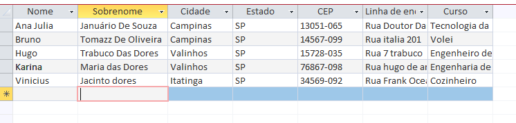
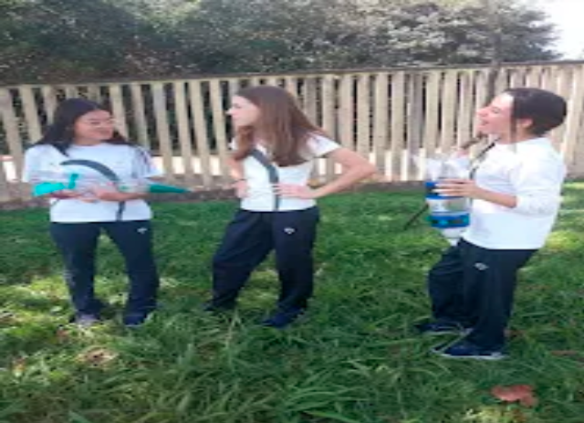
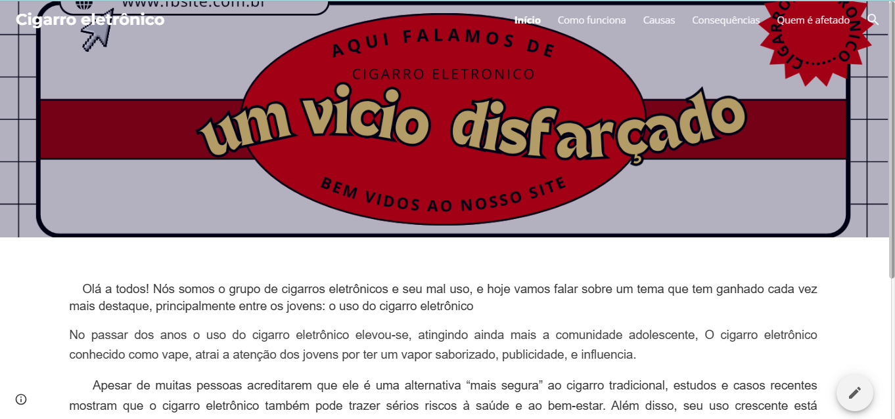
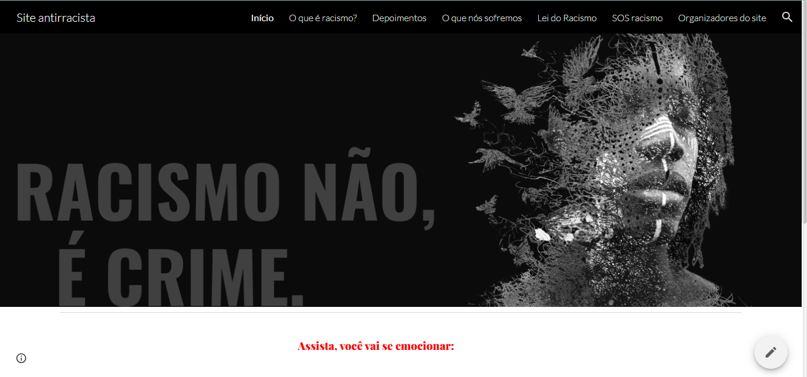
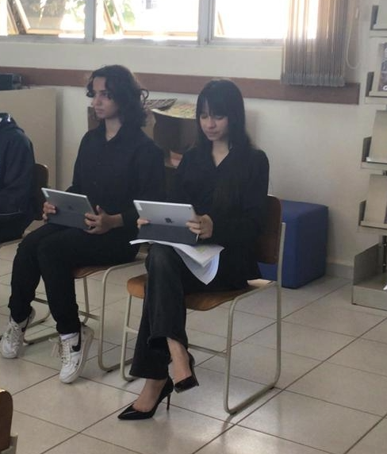
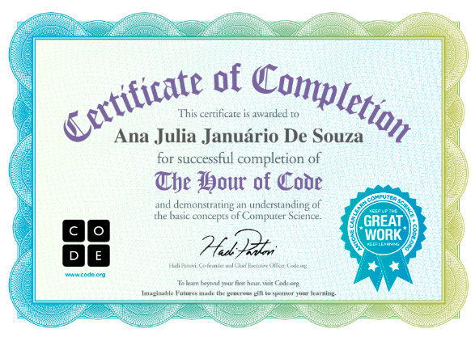
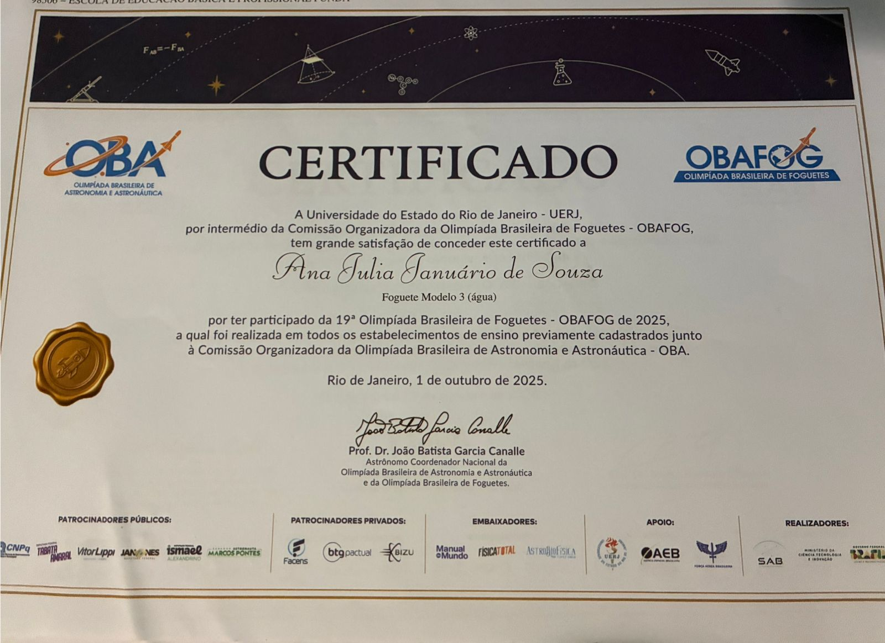

Ana Julia
Januário de Souza
Estudante de tecnologia, programação e desenvolvimento web. Apaixonada por aprender e criar projetos.
EntrarDesenvolvendo ideias e experiências digitais
Olá! Sou Ana Julia, tenho 15 anos e sou apaixonada por aprendizado, tecnologia e inovação. Sou uma pessoa curiosa, comunicativa e proativa, sempre em busca de novos desafios que contribuam para meu desenvolvimento pessoal e profissional.
Tenho facilidade para aprender novos conteúdos e gosto de ir além do que é apresentado em sala de aula, aprofundando meus conhecimentos por meio de pesquisas, projetos e estudos independentes. Meu comprometimento com o aprendizado já foi reconhecido por professores e colegas ao longo da minha trajetória acadêmica.
Gosto de trabalhar em equipe e frequentemente assumo papéis de liderança, contribuindo para a organização, comunicação e desenvolvimento de projetos. Acredito que colaboração, criatividade e dedicação são fundamentais para alcançar grandes resultados.
Meu objetivo é construir uma carreira sólida na área de Tecnologia da Informação, ingressando em uma universidade de excelência e desenvolvendo soluções inovadoras que gerem impacto positivo na sociedade
Projetos

Iniciação Banco de dados
Projeto de introdução a banco de dados, com foco na organização, modelagem e gerenciamento de informações. A experiência contribuiu para o desenvolvimento do raciocínio lógico e da compreensão de conceitos fundamentais utilizados em sistemas e aplicações tecnológicas.

Foguete OBAFOG
Projeto desenvolvido para a Olimpíada Brasileira de Astronomia e Astronáutica (OBA), envolvendo a construção e o lançamento de um foguete feito com garrafa PET. A atividade permitiu aplicar conceitos de física, engenharia e trabalho em equipe, além de desenvolver habilidades de planejamento e resolução de problemas.

Feira Científica
Projeto educativo voltado à conscientização sobre os riscos do cigarro eletrônico, promovendo informação, prevenção e hábitos de vida mais saudáveis.
Ver o aplicativo de conscientizaçãoArrecadamento para o rio grande do Sul
Projeto solidário voltado à arrecadação de doações para as vítimas das enchentes no Rio Grande do Sul, promovendo apoio às famílias afetadas e incentivando a colaboração e a responsabilidade social.

Projeto conscientização do racismo
Projeto desenvolvido para conscientizar sobre o racismo e oferecer apoio às vítimas de discriminação, reunindo informações educativas, recursos de suporte e conteúdos que promovem a igualdade e o respeito à diversidade. Ver projeto da feira

Projeto Juri simulado
Atuei como advogada de acusação em um Júri Simulado baseado em um caso fictício de homicídio. Durante o projeto, analisei provas, desenvolvi argumentos e apresentei a acusação, aprimorando habilidades de comunicação, liderança, pensamento crítico e trabalho em equipe.
Cursos
HTML e CSS
-Estrutura básica e estilização de páginas web.
-Tabela.
-Formularios Basicos.
-Seletor de Classes.
-Criação de jogos.
-Analisar erros de codigos.
JavaScript Básico.
-Interatividade em sites.
- -Média aritimética.
--Conectivos.
-Funções.
Sistemas operacionais.
-Banco de Dados e seus fundamentos. e ferramentas báscias.
-Execel e suas ferramentas basicas.
-Tabela verdade, logica proposicional.
-Conversao de numeros para binario, octal e hexadecimal.
Sitemas Embarcados.
introdução a circuitos e arduinos.
Componentes.
Lei de ohm.
Protoboard.
Ldr.
Arduino.
introdução a linguagem c.
Sensor de distâncica.
Cancela automatica.
Sensor de temperatura.
Logica de programação.
-Algoritimo.
-Tipo de dados e conversões.
-Condicionais.
-Loops.
-Arrays.
Habilidades
Certificados

Hour of Code (Hora do Código)
Certificado concedido pela Code.org pela conclusão do programa Hour of Code, uma iniciativa internacional voltada ao ensino de programação e fundamentos da Ciência da Computação. Durante a atividade, desenvolvi conhecimentos básicos de lógica computacional, resolução de problemas e conceitos introdutórios de programação.
>.jpeg)
Olimpíada Brasileira de Astronomia e Astronáutica (OBA)
Participação na Olimpíada Brasileira de Astronomia e Astronáutica, demonstrando interesse e dedicação aos estudos científicos relacionados à astronomia e astronáutica.

OBAFOG
Participação na Olimpíada Brasileira de Foguetes, aplicando conhecimentos de física, planejamento e trabalho em equipe na construção e lançamento de foguetes.
.jpeg)
Semana da Matematica
Participação e comprometimento aos desafios da Semanada da Matematica
Experiências
Feedbacks de Colegas de Classe
Karina Pedrosa Trabuco
Colega de ClasseAcompanho de perto os trabalhos da Ana Julia e sua evolução dia pós dias, posso afirmar com certeza que ela é uma pessoa muito dedicada, prestativa e comprometida com o que faz. Ela claramente possui um conhecimento sobre sua área (TI) e sempre demonstra isso buscando soluções, ajudando os outros e aprendendo cada vez mais. Ela é ótima colaborando sozinha e também em equipe, além de todas essas qualidades é uma ótima amiga, sempre pronta para compartilhar com seus colegas e apoiá-los.
Vinícius Jorge Barboza
Colega de ClasseA Ana Júlia é uma menina muito dedicada, eu considero ela super inteligente, engraçada, super sociável e cooperativa. Ela trabalha muito bem em grupos, consegue liderar e aceitar super bem decisões e tudo mais. Ela se dedica demais em tudo que se compromete a fazer, sempre tá estudando e quando se trata de TI, ela vai até o final e faz diversas coisas por conta própria, acompanho ela todos os dias e posso confirmar que ela é uma ótima DEV e uma pessoa excelente. Ela está sempre aprendendo coisas novas e sempre ensinando coisas novas para nós, ela se dá super bem em grupos e sempre coopera, tornando o ambiente mais leve e agradável.